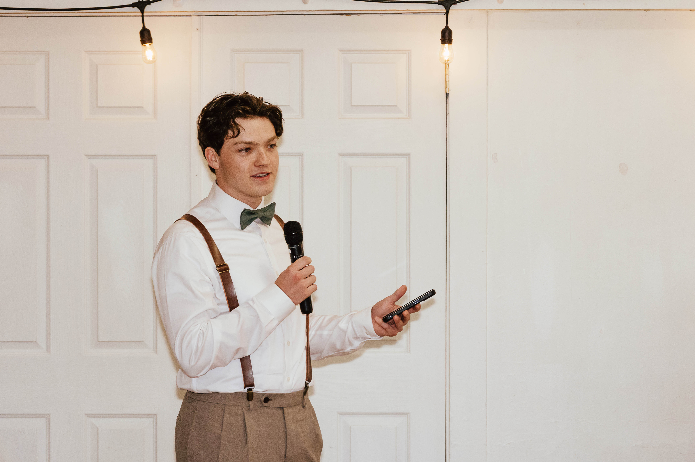

brady ancell
software developer at tyler technologies

hey, i'm brady — a software developer at tyler technologies. i graduated from the colorado school of mines with a cs degree and dove straight into building enterprise software full-time.
i love making things: websites, tools, whatever seems interesting at the time. i especially enjoy combining clean design with solid engineering. when i'm not at work, i'm usually tinkering on a side project.
check out my projects, connect with me on linkedin, or browse my github.